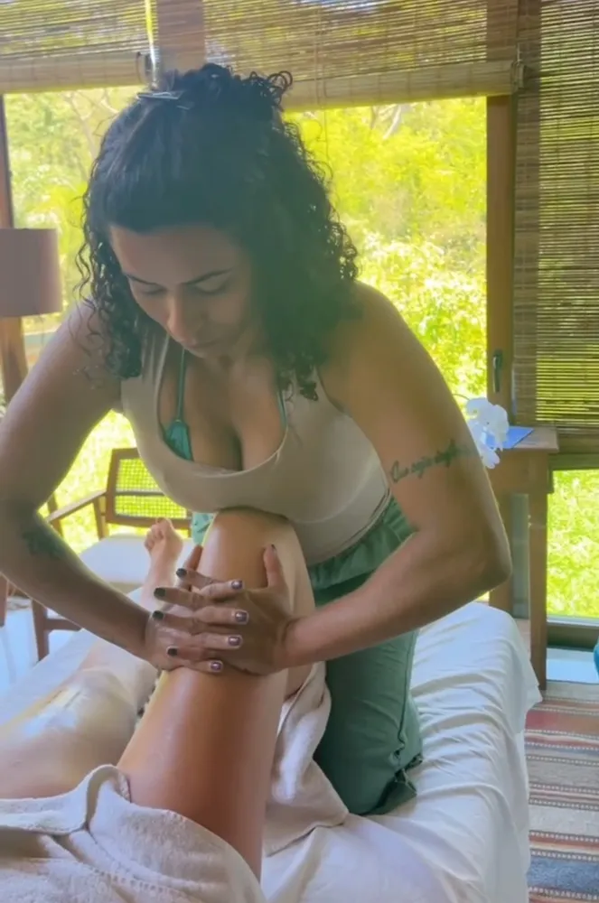
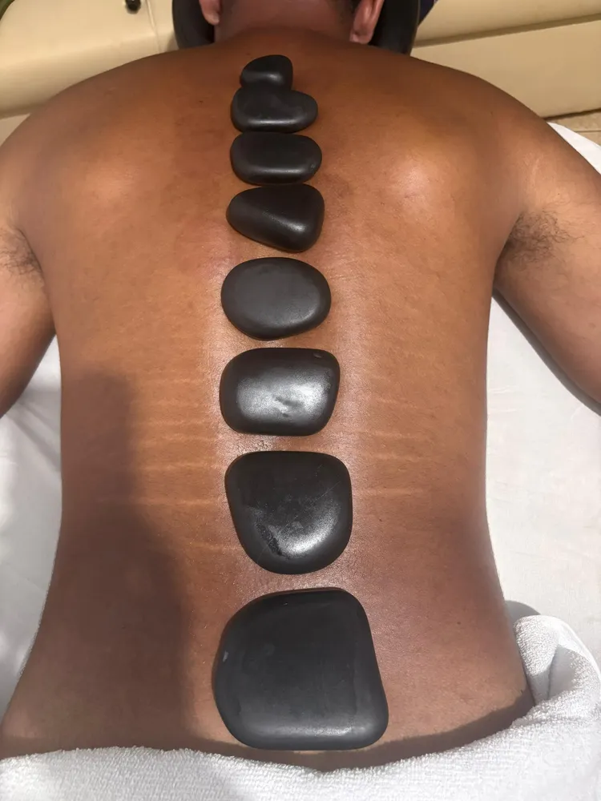
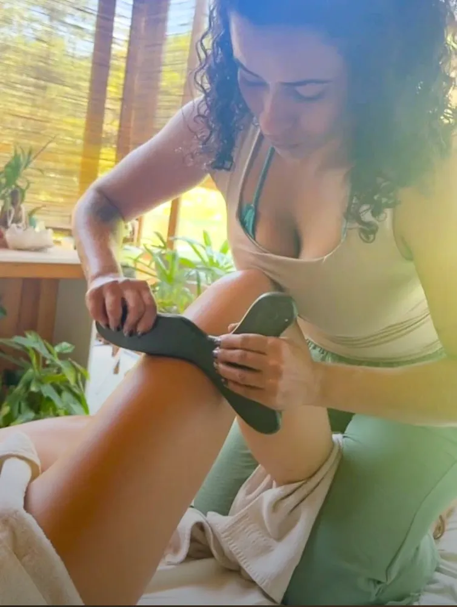
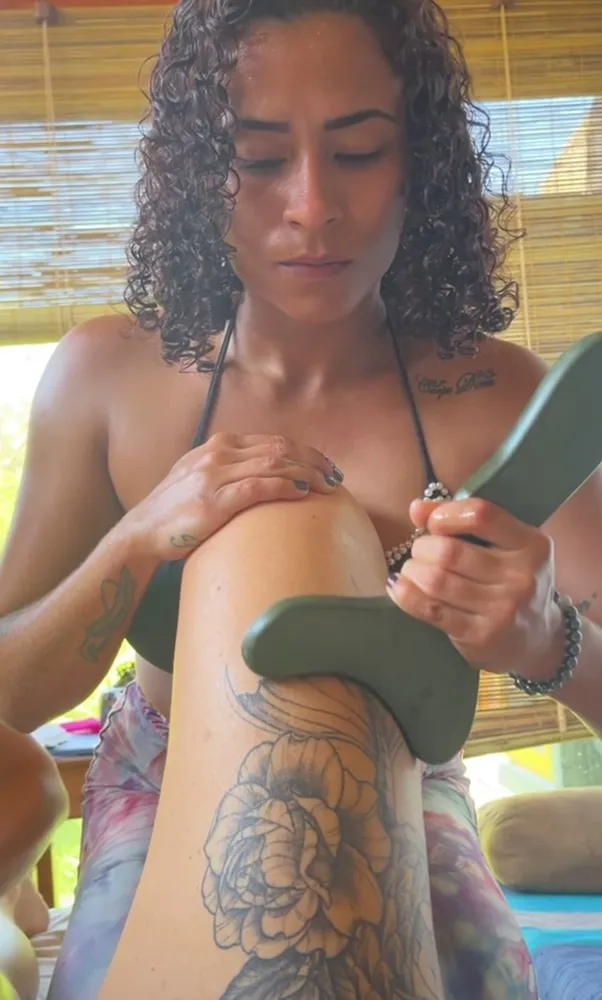
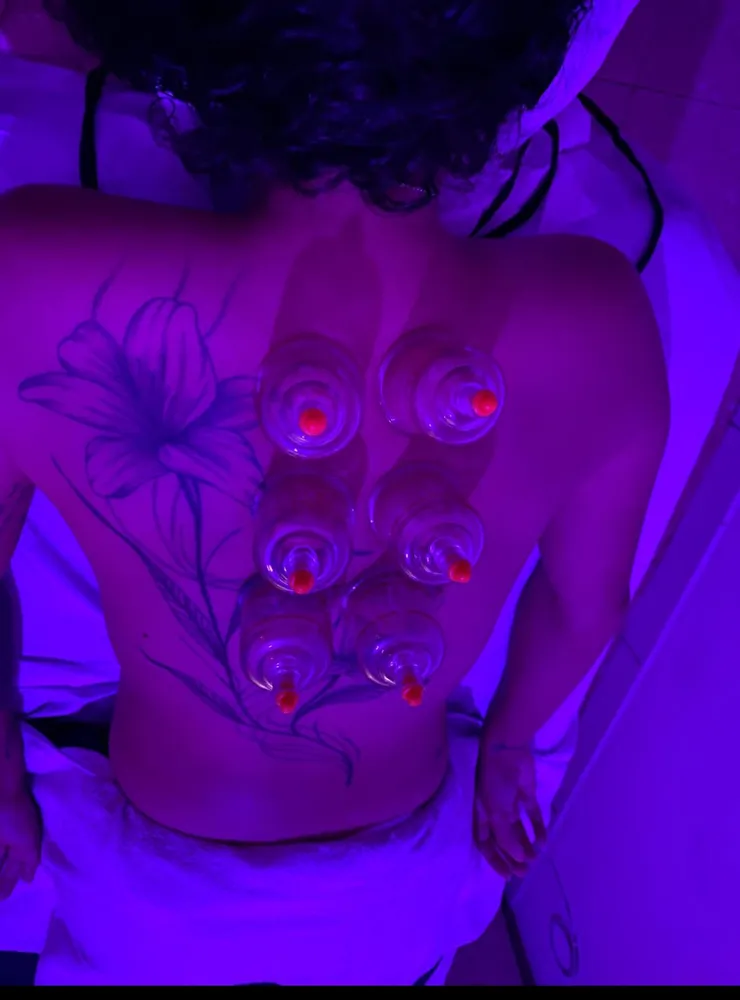
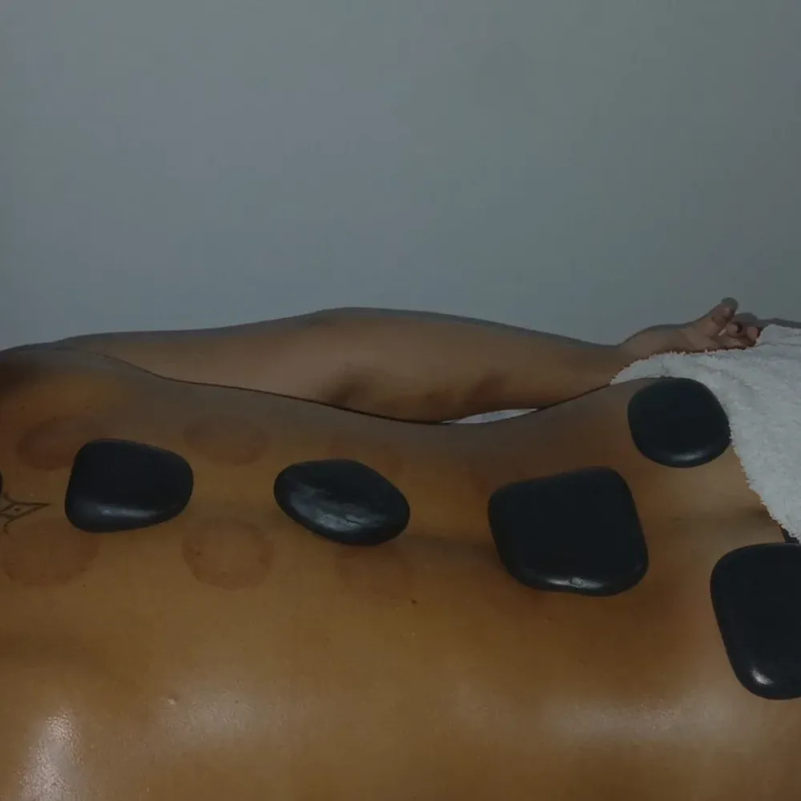
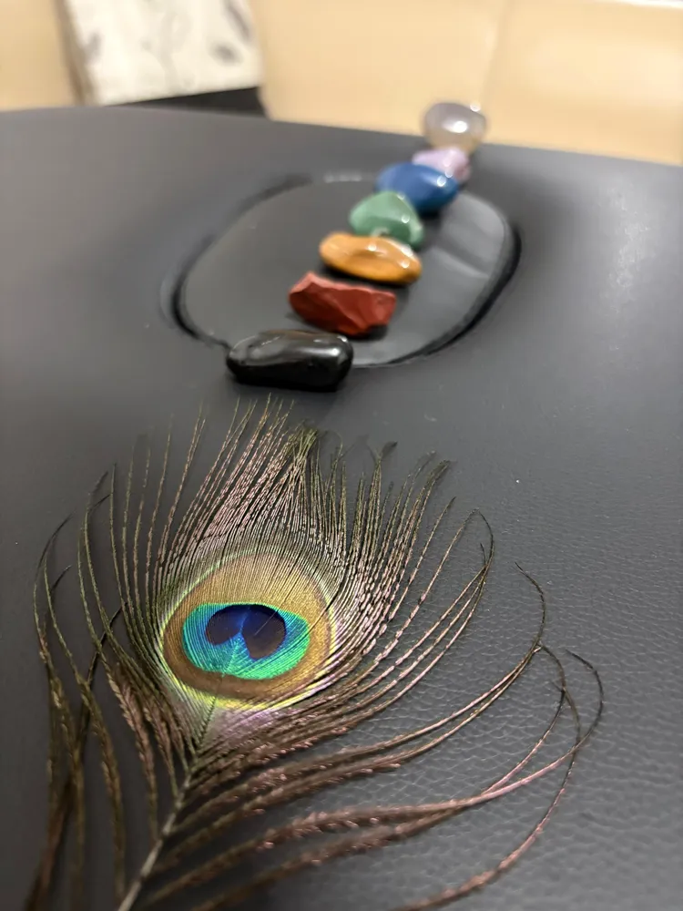
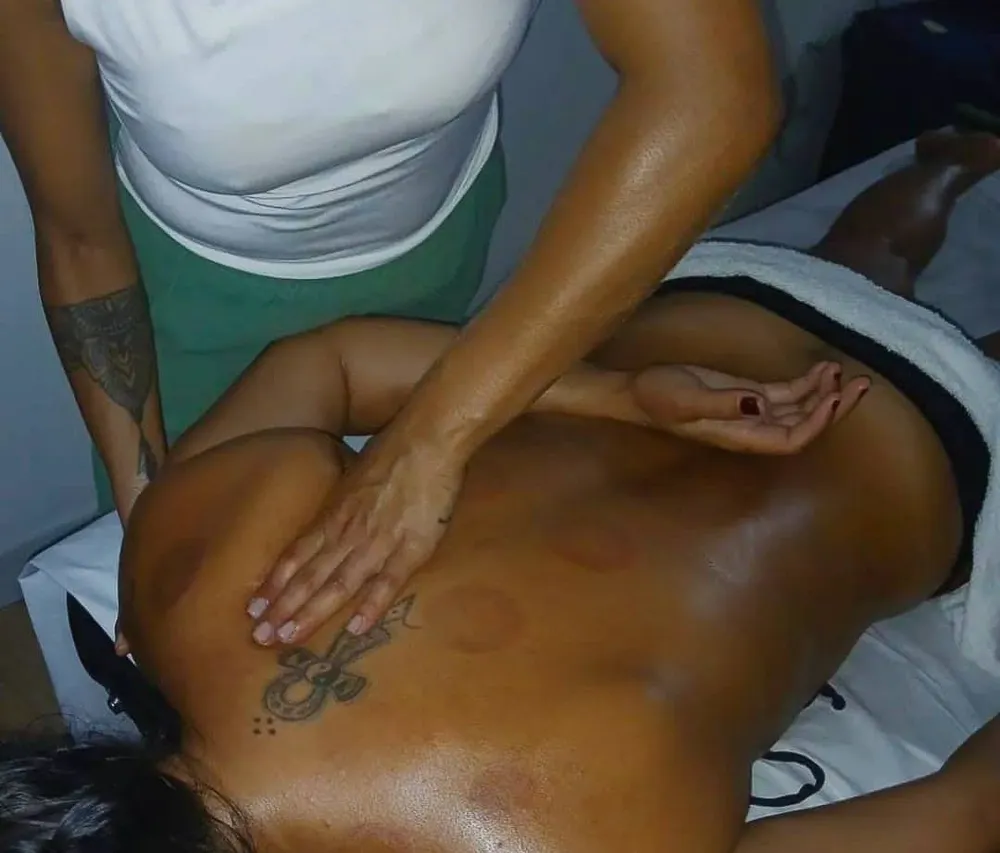
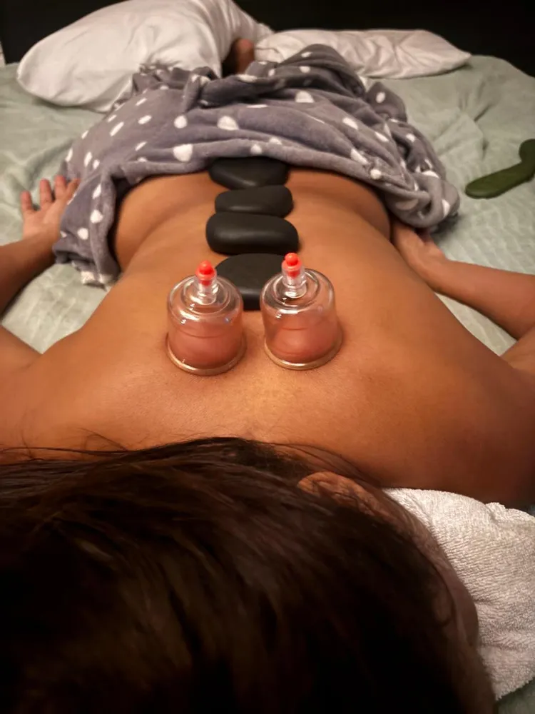
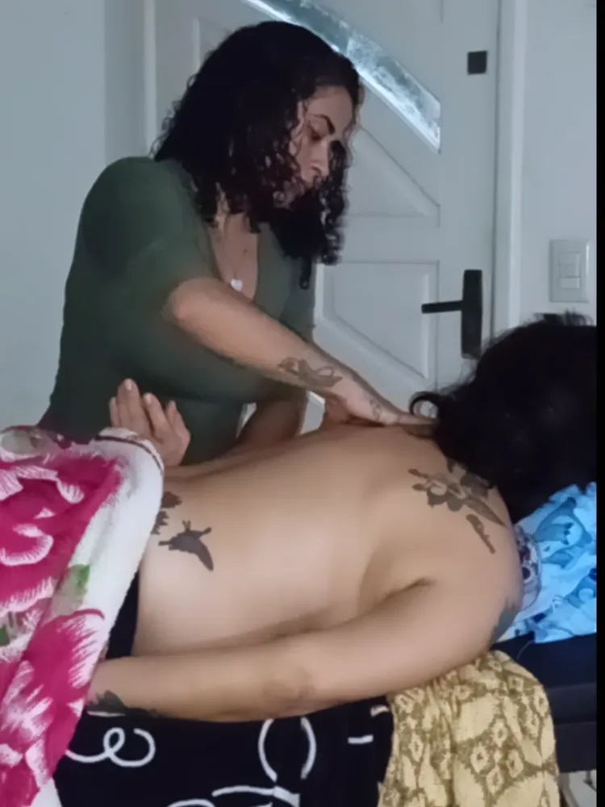

Massagem terapêutica em Florianópolis: aquela dor não precisa ser ignorada
Procurando massagem em Florianópolis para ombro travado, lombar que pesa no fim do dia, perna cansada de treino, cabeça que não desliga? A Karol combina massagem terapêutica, ventosaterapia, pedras quentes e Reiki numa sessão pensada para o que o seu corpo está pedindo hoje.
- Sessão personalizada
- Técnicas combinadas
- Hora marcada
- Ilha e Continente


O que é massagem terapêutica (e por que ela é diferente)
Massagem terapêutica é uma massagem direcionada à dor e à tensão muscular. Em vez de só deslizar as mãos pelo corpo, ela procura os pontos que estão travados, trabalha a musculatura com pressão ajustada e usa recursos como ventosa, pedras quentes e instrumentos de raspagem para soltar o que está preso.
O resultado que as clientes descrevem é quase sempre o mesmo: o corpo fica mais leve, o movimento volta a fluir e a cabeça desacelera. Por isso a sessão da Karol não segue um roteiro fixo. Ela começa ouvindo onde dói, desde quando, e o que piora ou melhora, e só então escolhe a combinação de técnicas.
- Foco nas regiões que você aponta: costas, lombar, pescoço, ombros, pernas
- Pressão ajustada ao seu limite, sem sofrimento
- Técnicas combinadas na mesma sessão quando faz sentido
- Orientações simples para o alívio durar depois da sessão

Massagem em Florianópolis: como escolher uma boa terapeuta
Quem pesquisa massagem em Florianópolis encontra de tudo: spas, clínicas, estúdios e profissionais independentes. Para não errar na escolha, vale observar cinco pontos.
1. Ela pergunta antes de tocar
Uma boa terapeuta quer saber onde dói, se você tem alguma condição de saúde e qual o seu objetivo. Sessão que começa sem conversa é sessão genérica.
2. Mostra trabalho real
Fotos e vídeos de atendimentos de verdade dizem muito mais do que imagem de banco. Aqui, tudo que você vê é da Karol.
3. Explica as técnicas
Você precisa entender por que vai receber ventosa, pedra quente ou Reiki, e o que esperar depois, incluindo as marcas da ventosa.
4. Respeita o seu limite
Massagem terapêutica pode ter pressão firme, mas não precisa ser sofrimento. A intensidade é ajustada ao longo da sessão.
5. Sabe dizer quando não fazer
Profissional séria conhece as contraindicações e indica procurar um médico quando o caso pede. Isso é cuidado, não falta de vontade de atender.
As terapias que a Karol combina na sua sessão
Cada técnica tem uma função. Juntas, elas cuidam do músculo, da circulação e da mente ao mesmo tempo.

Massagem terapêutica
Trabalho profundo nos nós musculares e pontos de dor, com as mãos e com instrumento de raspagem para liberar a fáscia.
Para dores e tensões
Ventosaterapia
Copos que fazem sucção na pele, puxam o sangue para a região e ajudam a soltar a musculatura tensionada.
Para tensão acumulada
Pedras quentes
Pedras de basalto aquecidas que relaxam o músculo por dentro e deixam a massagem muito mais profunda e acolhedora.
Para relaxar de verdade
Reiki com cristais
Tratamento energético com imposição de mãos e cristais dos 7 chakras, para desacelerar a mente e equilibrar a energia.
Para estresse e ansiedadeNão sabe qual escolher?
Conte o que você está sentindo e a Karol monta a combinação certa pra você.
Massagem para dor nas costas, pescoço e tendinite
A maior parte das dores do dia a dia vem de músculo sobrecarregado: horas sentada no computador, celular na mão, peso no ombro, treino sem alongar, estresse que vira ombro encolhido. A musculatura encurta, forma pontos de tensão e começa a doer, às vezes irradiando para a cabeça ou para a perna.
Na massagem terapêutica a Karol trabalha exatamente essas regiões:
- Lombar e costas: para quem sente o corpo "travar" no fim do dia
- Pescoço, trapézio e ombros: a região que mais acumula estresse
- Braço, antebraço e punho: sobrecarga de quem digita, dirige ou treina, comum em quadros de tendinite
- Pernas e panturrilhas: cansaço, peso e tensão depois de treino ou de muito tempo em pé
A massagem alivia a tensão muscular em volta da região dolorida e complementa o seu tratamento. Em crise aguda, inflamação intensa, formigamento ou dor que não melhora, procure também um médico ou fisioterapeuta.

Ventosaterapia: como funciona e por que deixa marcas
Na ventosaterapia, copos de acrílico fazem uma sucção suave sobre a pele. Essa sucção levanta o tecido, aumenta a circulação na região e ajuda a soltar a musculatura e a fáscia que estão aderidas. Os copos podem ficar parados nos pontos de tensão ou deslizar com óleo, numa espécie de massagem ao contrário: em vez de empurrar, puxa.
É comum sair com marcas redondas, rosadas ou arroxeadas. Elas mostram onde havia mais tensão e somem sozinhas em alguns dias. Se você tem compromisso com a pele à mostra, é só avisar que a Karol ajusta a intensidade ou usa a técnica deslizante.
- Indicada para tensão acumulada nas costas e ombros
- Combina muito bem com pedras quentes na mesma sessão
- Sensação de "corpo destravado" logo depois

Massagem com pedras quentes: o relaxamento que chega mais fundo
As pedras de basalto são aquecidas e posicionadas ao longo da coluna, nas mãos e nos pontos de tensão. O calor dilata os vasos, aquece o músculo e faz a musculatura ceder sem precisar de força. Depois, a própria pedra vira ferramenta de massagem, deslizando pelas costas.
É a escolha certa para quem chega esgotada, com o corpo gelado de tensão ou com dificuldade para dormir. Muita gente cochila na maca, e esse é um ótimo sinal.
Massagem relaxante x terapêutica: se o seu objetivo é desligar a mente, a relaxante com pedras quentes é o caminho. Se existe um ponto de dor específico, a Karol entra com a parte terapêutica nesse ponto e termina com o relaxamento.
Reiki com cristais dos 7 chakras
O Reiki é uma prática integrativa de origem japonesa em que a terapeuta posiciona as mãos sobre o corpo, sem pressão, para conduzir um estado de relaxamento profundo. Na sessão da Karol ele vem acompanhado dos cristais dos 7 chakras, colocados ao longo do corpo.
Quem procura o Reiki normalmente quer desacelerar: ansiedade, sono agitado, cansaço emocional, sensação de estar carregada. Ele pode ser feito sozinho ou no fim de uma massagem, para fechar a sessão com calma.
- Relaxamento profundo sem toque de pressão
- Pode ser combinado com massagem e pedras quentes
- Prática complementar, que caminha junto com qualquer tratamento
Benefícios da massagem terapêutica no dia a dia
Quem faz massagem com regularidade costuma perceber mudanças que vão além daquele alívio imediato na maca. Os benefícios mais relatados são:
- Menos tensão muscular: os pontos que viviam doloridos ficam mais soltos e demoram mais para travar de novo.
- Mais mobilidade: virar o pescoço, levantar o braço e abaixar para pegar algo fica mais fácil.
- Circulação ativada: o calor das pedras e a sucção da ventosa levam mais sangue para a região trabalhada.
- Sono mais tranquilo: o corpo desacelera e a mente acompanha, principalmente quando a sessão termina com Reiki.
- Consciência corporal: você passa a notar onde acumula tensão e a se cuidar antes da dor aparecer.
- Um tempo só seu: uma hora sem celular, sem cobrança, só cuidado. Para muita gente, esse é o maior benefício.

Massagem relaxante: quando o que dói é o cansaço
Nem toda procura por massagem começa com uma dor específica. Às vezes o corpo está inteiro pesado, a cabeça não para e o sono não descansa. Para esses dias existe a massagem relaxante: movimentos longos, ritmo lento, pressão média e o calor das pedras quentes, num ambiente com luz baixa e silêncio.
O objetivo é tirar o sistema nervoso do modo alerta. A respiração desacelera, os ombros descem e a mente finalmente desliga. É uma ótima escolha para presentear alguém, para fechar uma semana puxada ou como primeira experiência de quem nunca fez massagem.
- Corpo inteiro: costas, pernas, pés, braços, mãos, pescoço e couro cabeludo
- Pode incluir pedras quentes e finalizar com Reiki
- Indicada para estresse, ansiedade e insônia leve
Com que frequência fazer massagem terapêutica
Não existe uma regra única, mas existe uma lógica. A frequência ideal depende de quanto tempo a dor existe e de quanto a sua rotina volta a criar tensão.
| Situação | Frequência sugerida | Objetivo |
|---|---|---|
| Dor recente, que começou há poucos dias | 1 ou 2 sessões próximas | Soltar a tensão antes que ela vire rotina |
| Dor que vai e volta há meses | Semanal no começo, depois quinzenal | Quebrar o ciclo de tensão e dor |
| Treino intenso ou provas | Depois dos treinos mais pesados | Recuperação muscular |
| Manutenção e bem-estar | Uma vez por mês | Evitar que a tensão se acumule de novo |
Essas frequências são uma referência geral. A Karol ajusta o plano depois de conhecer o seu corpo e a sua rotina, e sempre respeita o seu orçamento e a sua agenda.
Liberação com instrumento: quando as mãos precisam de ajuda
A fáscia é uma película que envolve cada músculo. Quando ela fica tensa ou "grudada", o músculo não desliza direito e a dor aparece. Nas regiões mais densas, como coxa, panturrilha e costas, a Karol usa um instrumento de raspagem que desliza sobre a pele com óleo e ajuda a soltar essas aderências com mais precisão do que só com as mãos.
A sensação é de uma pressão firme que vai cedendo aos poucos. É muito procurada por quem pratica esporte, fica muito tempo em pé ou sente a perna pesada no fim do dia.
Massagem para quem trabalha sentado e para quem treina
Home office e escritório
Oito horas na cadeira, ombro subindo em direção à orelha e a lombar reclamando. A sessão foca em trapézio, pescoço, região entre as escápulas e lombar, que é onde esse estilo de vida mais cobra. Uma massagem por mês já muda a forma como você termina a semana.
Corrida, academia e beach tennis
Panturrilha dura, coxa pesada, antebraço sobrecarregado pela raquete. A liberação com instrumento e a ventosa ajudam a soltar a musculatura depois de treinos intensos e de provas. O ideal é marcar um dia depois do treino mais pesado, nunca logo antes de competir.
Surf, remo e trilhas
Quem aproveita o mar e as trilhas da Ilha exige muito de ombros, costas e pernas. A massagem terapêutica cuida dessa sobrecarga para você continuar fazendo o que ama sem dor.
Mães, cuidadoras e rotinas puxadas
Carregar criança no colo, dormir pouco e não parar nunca deixa marcas no corpo. Aqui a combinação de pedras quentes e Reiki entrega o que mais falta: descanso de verdade.
Antes e depois da sessão: como aproveitar mais
Antes: evite chegar logo depois de uma refeição pesada, use roupa confortável e conte com sinceridade o que sente, incluindo remédios, cirurgias e gestação. Quanto mais a Karol souber, mais certeira fica a sessão.
Depois: beba bastante água, evite treinos muito intensos no mesmo dia e, se fez ventosa, proteja as marcas do sol forte. Uma leve sensibilidade muscular no dia seguinte é normal, parecida com a de quem voltou a treinar, e passa em até 48 horas.
Quando não fazer ou adaptar a massagem
- Febre, gripe forte ou infecção ativa
- Trombose, varizes importantes ou problemas de coagulação
- Lesão, fratura ou cirurgia recente na região
- Feridas, queimaduras ou irritação na pele
- Gestação: avise sempre, porque algumas técnicas e posições mudam
Massagem em São José, Palhoça e Biguaçu
Muita gente procura "massagem em São José" ou "massagem em Palhoça" achando que precisa atravessar a ponte para ter um atendimento de qualidade. Não precisa. A Karol atende toda a Grande Florianópolis com hora marcada, do Centro e da Trindade até o Kobrasol, Barreiros, Pagani e Biguaçu.
Ao chamar no WhatsApp, diga em qual bairro você está. Assim ela já confirma o local e o horário mais prático para você, sem perder tempo no trânsito.
Karoline Maia, terapeuta corporal
Karoline Maia é a fundadora da Karoline Maia Terapias e atende pessoalmente cada cliente. Combina massagem terapêutica e relaxante, ventosaterapia, pedras quentes e Reiki com cristais dos 7 chakras, e também é trancista. Todas as fotos e vídeos desta página são de atendimentos reais feitos por ela.
Atendemos com hora marcada em toda a Grande Florianópolis. Telefone e WhatsApp: (48) 99145-5759. Instagram: @karoline_maia_terapias.
Falar com a KarolQual terapia combina com o que você sente
| O que você sente | Terapia indicada | Como fica a sessão |
|---|---|---|
| Dor nas costas ou lombar | Massagem terapêutica + ventosa | Foco na região, com pressão progressiva |
| Pescoço e ombros travados | Massagem terapêutica + pedras quentes | Liberação do trapézio e relaxamento no final |
| Sobrecarga no braço ou tendinite | Massagem terapêutica com instrumento | Trabalho na musculatura em volta do ponto dolorido |
| Pernas cansadas ou pós-treino | Massagem terapêutica + raspagem | Soltura das panturrilhas e coxas |
| Estresse, ansiedade, sono ruim | Massagem relaxante com pedras quentes + Reiki | Ritmo lento, calor e silêncio |
| Só quero um momento pra mim | Massagem relaxante | Sessão completa de corpo |
Sua dor tem nome. Seu alívio também.
Mande uma mensagem dizendo onde dói e receba a indicação e o valor da sessão.
Como funciona o atendimento
Você chama no WhatsApp
Conta o que sente, onde dói e desde quando. A Karol sugere a terapia e passa horários e valores.
Conversa rápida antes
No dia, ela confirma seu histórico, cuidados e contraindicações e ajusta a pressão ao seu limite.
Sessão personalizada
Massagem, ventosa, pedras quentes e Reiki combinados conforme o objetivo do dia.
Orientação para depois
Dicas de hidratação, alongamento e o ritmo ideal de retorno para o alívio durar.
Cada sessão, um cuidado diferente
Massagem terapêutica em toda a Grande Florianópolis
Atendo com hora marcada clientes da Ilha, do Continente e das cidades vizinhas. No WhatsApp a gente combina o melhor local e horário pra você.
- Florianópolis
- São José
- Palhoça
- Biguaçu
- Santo Amaro da Imperatriz
- Governador Celso Ramos
- Antônio Carlos
- Águas Mornas
- São Pedro de Alcântara
Bairros com mais procura:
- Centro
- Trindade
- Itacorubi
- Lagoa da Conceição
- Campeche
- Rio Tavares
- Ingleses
- Canasvieiras
- Jurerê
- Estreito
- Coqueiros
- Kobrasol (São José)
- Barreiros (São José)
- Pagani (Palhoça)
- Ponte do Imaruim (Palhoça)
Massagem em São José
Kobrasol, Campinas, Barreiros e Forquilhinhas.
Ver regiãoMassagem em Palhoça
Pagani, Pedra Branca, Ponte do Imaruim.
Ver regiãoMassagem no Centro de Florianópolis
Centro, Agronômica, Trindade e Itacorubi.
Ver regiãoMassagem no Campeche
Sul e Leste da Ilha: Rio Tavares, Morro das Pedras, Lagoa.
Ver regiãoMassagem em Canasvieiras
Norte da Ilha: Jurerê, Ingleses, Cachoeira.
Ver regiãoMassagem no Estreito
Continente: Coqueiros, Capoeiras, Balneário.
Ver regiãoToda a Grande Florianópolis
Biguaçu, Santo Amaro e demais cidades.
Ver regiãoPerguntas sobre massagem terapêutica
Quanto custa a massagem terapêutica em Florianópolis?
O valor depende da técnica escolhida (terapêutica, relaxante, pedras quentes, ventosa ou Reiki), da duração e da combinação de terapias na mesma sessão. Chame a Karol no WhatsApp contando o que você sente e ela passa o valor exato e os horários livres.
Qual a diferença entre massagem terapêutica e massagem relaxante?
A relaxante usa movimentos mais leves e contínuos para desacelerar o corpo e a mente. A terapêutica é direcionada: trabalha com mais pressão os pontos de tensão, nós musculares e regiões de dor, como lombar, trapézio e pernas. Muitas sessões combinam as duas.
A ventosaterapia deixa marcas na pele?
Pode deixar marcas arredondadas, de tom rosado a arroxeado, nos pontos onde os copos ficaram. Elas não são hematoma de pancada: aparecem porque a sucção puxa sangue para a região. Costumam sumir entre 3 e 10 dias. Se você tem um evento ou vai à praia, avise antes.
Massagem ajuda na tendinite e nas dores nas costas?
A massagem terapêutica ajuda a soltar a musculatura que está sobrecarregada ao redor da região dolorida, melhora a circulação local e costuma trazer alívio. Ela complementa, mas não substitui, a avaliação de um médico ou fisioterapeuta, principalmente em crises agudas, inflamação forte ou dor que não passa.
Quantas sessões eu preciso?
Muita gente sente alívio já na primeira sessão. Para dor que se repete (lombar, ombro, pescoço de quem trabalha sentado) o ideal é uma sequência de sessões, por exemplo semanais no início e depois de manutenção. A Karol indica o ritmo depois de conhecer o seu caso.
O Reiki substitui tratamento médico ou psicológico?
Não. O Reiki é uma prática integrativa e complementar, voltada ao relaxamento profundo e ao equilíbrio. Ele pode caminhar junto com o seu tratamento, nunca no lugar dele.
Quem não pode fazer massagem ou ventosa?
Avise sempre se você está grávida, tem trombose, varizes importantes, problema de coagulação, febre, lesão recente, feridas na pele ou alguma doença em tratamento. Em alguns desses casos a técnica é adaptada; em outros, é melhor liberar com o seu médico antes.
Quanto tempo dura uma sessão?
A duração é combinada no agendamento. Sessões focadas em uma região são mais curtas; sessões que combinam massagem terapêutica, ventosa, pedras quentes e Reiki pedem mais tempo para serem feitas com calma.
Preciso levar alguma coisa?
Não. Toalhas, óleos, pedras, ventosas e cristais ficam por conta da Karol. Basta vir com roupa confortável e contar o que você está sentindo.
Posso fazer massagem depois do treino?
Pode e é uma ótima ideia, de preferência no dia seguinte a um treino pesado ou a uma prova. Logo antes de competir, prefira uma sessão leve ou deixe para depois.
Você atende em São José, Palhoça e Biguaçu?
Sim. O atendimento cobre Florianópolis e toda a Grande Florianópolis, incluindo São José, Palhoça e Biguaçu. Pelo WhatsApp você combina local e horário.
Seu corpo pediu uma pausa?
Os horários são limitados. Garanta o seu pelo WhatsApp.